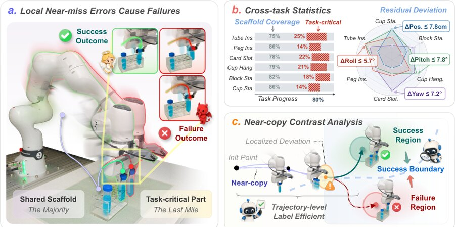
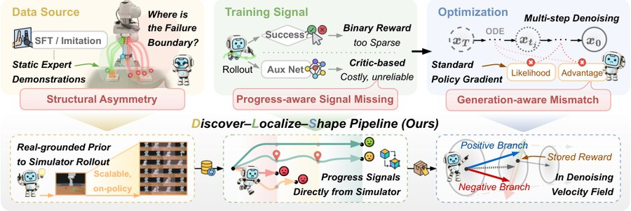
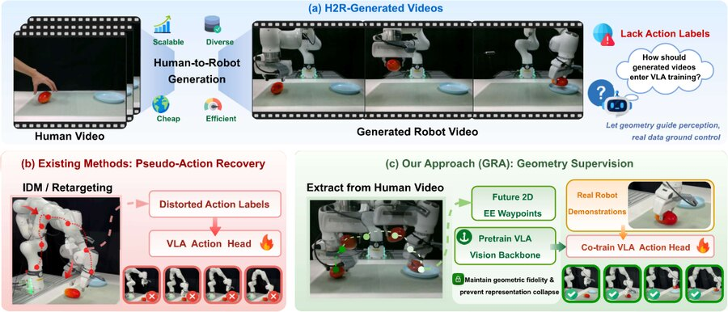

📄 When Failures Outline Success: Contrastive Denoising for Fine-Grained Robotic Manipulation
Under Review · 2026.05
I am an M.Sc. student in ECE. I am also conducting research on robot policy learning at Show Lab under the advice of Prof. Mike Zheng Shou. My research interests include Diffusion Models, VLA Models and World Models.
Previously, I received my bachelor's degree in Automation from Zhejiang University, where my early research focused on control for robots.

Under Review · 2026.05

Under Review · 2026.05

Arxiv Preprint · 2026.06
In Research and Exploration in Laboratory · 2026.02
In 2024 China Automation Congress, IEEE · 2024.11
Supported by the CNSF under Grant No. U21A20485
Supported by the Xinmiao Talent Plan of Zhejiang under Grant No. 2022R401035
I am always open to potential collaborations and research opportunities. If my background aligns with your interests or if you have research topics to explore together, please feel free to reach out via E-mail: aaroncaozj@gmail.com.
For further details regarding my experience, please refer to my CV (CN).
Want to find more about me? Go to 👉 🖼️ Gallery